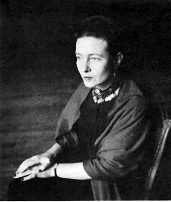
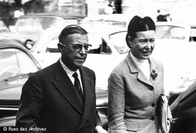

“Sartre’la karşılaştığım zaman, her şeyi kazandığıma inanmıştım. Onun yanında kendimi gerçekleştirmem başarısızlığa uğrayamazdı. Şimdi kendi kendime şunu söylüyorum: Kurtuluşunu bir başkasında görmek, yıkılmanın en güvenli yoludur.”
Simone de Beauvoir
Zamanın ötelerinden gelen bazı düşünürler vardır ve açıkça filozof olarak tanınırlar; tıpkı Plato gibi. Bunun yanında bulundukları felsefi konum, sonsuza kadar çekiştirilecek olan filozoflar vardır; Nietzsche gibi. Ayrıca felsefi konumlarını yavaş yavaş ve zamanla kazanmış filozoflar da vardır; Simone de Beauvoir gibi. Kendini bir filozoftan çok bir yazar ve yine bir düşünürden çok Sartre’ın varoluşçuluğunun ebesi olarak tanımlamıştı. Beauvoir’ın felsefedeki yeri, bugün daha yeni yeni anlaşılmaya başlandı.
Simone de Beauvoir felsefe, siyaset ve sosyal konular üzerine romanlar, monografiler, denemeler, biyografiler ve otobiyografik yazılar yazdı. Mandarinler gibi metafizik temalı romanlarıyla tanındı. 1949 tarihli incelemesi Le Deuxième Sexe (İkinci Cins), kadın üzerindeki zulüm ve baskının detaylı bir analizi, modern feminizmin önemli adımı oldu.
Bugün kadın ve felsefe tarihinde sarsılmaz bir yere sahip olan Simone de Beauvoir, kadını modern hayatın içine yerleştirmekle kadınların dünyasında çok şeyi değiştirdi.
Babası hep erkek çocuğu olsun istemişti
Simone de Beauvoir, eski bir avukat olan amatör aktör bir baba ile Verdunlu genç bir annenin kızı olarak Paris’te doğdu. İyi okullarda eğitim gördü. Simone’un aynı zamanda büyük bir bankanın müdürü olan dedesinin işleri Birinci Dünya Savaşı’ndan sonra kötüye gidince, aile yoksullukla baş başa kaldı.
Simone, babasının her zaman bir erkek çocuk istediğinin farkındaydı, ancak iki kız kardeş idiler. (Kız kardeşi Helene de Beauvoir, daha sonra ressam olacaktı). Bununla birlikte babası Simone’a her zaman “Sende bir erkek beyni var” derdi. Simone, küçüklüğünden beri farklı ve seçkin bir öğrenciydi.
Simone 15 yaşındayken ünlü bir yazar olmaya karar verdi. Pek çok konuda iyiydi. Fakat özellikle Paris Üniversitesi’ndeki derslerde felsefenin cazibesine kapılmıştı. Bu sürede Jean-Paul Sartre gibi genç entelektüellerle tanışmıştı. Matematik ve felsefe alanındaki bakalorya sınavını geçmesinin ardından Katolik Enstitüsü’nde matematik, Sainte-Marie Enstitüsü’nde edebiyat ve dil, Sorbonne’da ise felsefe eğitimi aldı. 1929’da, Sorbonne’dayken Leibniz hakkında bir sunum yapan Simone, Jean-Paul Sartre ile ilişki kurdu. Bu birliktelik, Simone’un içindeki felsefe bombasının pimini çekecekti.
Simone 21 yaşındayken, felsefe alanında çevredeki en donanımlı kişilerden biri olmuştu. Final sınavında o ikinci sırayı almış, 24 yaşındaki Sartre ise birinci olmuştu. Deirdre Bair’in 1990 tarihli Beauvoir biyografisine göre jüri, birinciliği Sartre ve Simone’dan hangisine vermesi gerektiğine dair yoğun tartışmalar yapmış, sonunda Sartre’ı ödüllendirmişti. Çünkü o bir erkekti ve bu sınav onun ikinci denemesiydi! Ancak jüri, Beauvoir’ın gerçek bir filozof olduğuna da kanaat getirmişti.
Simone Sorbonne’dayken, ömrü boyunca kullanacağı takma ismi elde etmişti: Castor. Fransızca’da ‘Kunduz’ manasına gelen bu isim kendisine, kunduz gibi inatçı bir çalışma temposuna sahip olduğu ve kendisi gibi düşünenlerle uyum içinde çalıştığı için takılmıştı. Bu arada soyadının İngilizcedeki ‘beaver’e (kunduz) çok benzemesinin de bunda etkisi vardı.
Varoluşçu Etik
Beauvoir, 1944’te varoluşçu etik üzerine bir tartışma olarak tanımlanabilecek Pyrrhus et Cineas’ı yazdı. 1947’de kaleme aldığı Pour Une Morale de L’ambiguite’ (Muğlaklık Etiği) ile Simone, belki de Fransız varoluşçuluğunun en fazla kabul görecek noktasını yakalamıştı. Sartre’ın Varlık ve Hiçlik kavramları arasındaki doğal zıtlığı basit ve anlaşılır bir dille anlatmış, yine Sartre’ın da aralarında bulunduğu filozofların Varlık ve Hiçlik kavramlarındaki tutarsızlıklarını açık bir dille yansıtmıştı.

Feminizmin teorisyeni Simon de Beauvoir
Woman: Myth and Reality (Kadın: Efsane ve Gerçek) isimli denemesinde Simone, erkeklerin kadınları, kendilerini yanlış havalara sokan gizemli ‘öteki’ler olarak gördüğünü iddia etti. Ve erkeklerin, bu ‘öteki’ olma durumunu, kadınları ve onların sorunlarını anlamadıklarını, onlara yardım etmediklerini, hatta bunu onlara uyguladıkları baskılara bir neden olarak kullandıklarını dile getirdi. Bu durumun tüm toplumlarda klişeleşmiş bir hal aldığını, hiyerarşiyi elinde tutanların her zaman güçsüzleri ‘öteki’ olarak tanımladığını ve bu kişileri etraflarında dolaşan karanlık gölgeler olarak gördüklerini savundu. Bu durumun sınıflar arasındaki ilişkilerde, dinsel ve ırksal ayrımların mücadelesinde, yani her türlü karşıtlıkta görüldüğünü ama hiçbir karşıtlıkta, ‘öteki’ nitelendirmesinin ve ‘öteki’ne yaklaşımın kadın-erkek ayrımındaki kadar klişeleşmiş bir hal almadığını, hayatın mevcut düzenine gerekçe olarak gösterilmediğini söyledi.
Le Deuxième Sexe ile erkek egemen düzene savaş ilan etti
Simone, oldukça ses getiren ve feminizmin tarihinde müstesna bir yeri olan Le Deuxième Sexe (İkinci Cins) isimli eserini 1949’da yayımladı. Çalışmasında Freudcu yönleri ağır basan feminist bir varoluşçuluk anlayışı dikkat çekiyordu. Simone, Varoluşçuluk felsefesinde olduğu gibi, ‘var oluşun’, ‘özden’ önce geldiğini temel prensip olarak kabul ediyor ve ‘Kadın doğulmaz, olunur’ diyordu. Çığır açan bu çalışmada özellikle ‘öteki’ kavramı üzerine eğilmişti. Ona göre kadınların ‘öteki’ olarak tanımlanması ve mevcut sosyal konumları, gördükleri baskının temelini oluşturmaktaydı.
Simone daha da ileri gitti ve kadının tarih boyunca sapkın ve anormal bir canlı olarak görüldüğünü, Fransız Devrimi döneminin ünlü kadın hakları savunucusu Mary Wollstonecraft’ın bile, ‘Erkekleri, kadınların ulaşmaları gereken ideal örnek’ olarak sunduğunu iddia etti. “Bu durum kadınların kendilerini normalden sapmış, dışta kalan ve normale ulaşmaya çalışan canlılar gibi algılamalarına neden olmuş, başarılarını sınırlandırmıştır” diyen Beauvoir, bu düşüncelerin çöpe atılması gerektiğini savundu ve noktayı koydu: “Kadınlar da erkekler kadar ayırım yapma ve seçme yeteneğine sahiptir. Böylelikle kendilerini geliştirmeyi seçebilir, mevcut durumlarını ileri götürebilir, kendi hayatlarının ve dünyanın sorumluluğunu yüklenebilirler.”

Simon de Beauvoir, tutkulu bir aşkla bağlı olduğu Jean Paul Sartre ile
Beauvoir, Amerika ve Çin yolculuklarının ardından popüler gezi günlükleri yazdı ve bunları 1950’li ve 60’lı yıllarda çok ayrıntılı bir şekilde kullandı.
1970’lerde Fransa’daki kadınların serbestlik kazanma hareketine katıldı. 1971’deki 343 Manifestosu’nu imzaladı. Listedeki çoğu ünlü kadın kürtaj hakkını savunuyordu. Beauvoir, aslında hiç çocuk aldırmamıştı. Catherine Denevue, Delphine Seyrig ve Beauvoir’in kardeşi Poupette’nin imzalarıyla, kürtaj 1974’te Fransa’da yasallık kazandı.
1981’de yazdığı La Ceremonie Des Adieux (Sartre’a Elveda) isimli eserinde, Sartre’ın acı dolu son yıllarına değindi. Kitabın girişinde, ilk defa büyük bir eserini Sartre tamamen okumadan yayınlamak zorunda kaldığını belirtiyordu. İki filozof, her zaman birbirlerinin kitaplarını önce okur, sonra yayımlarlardı.
Sartre’ın ölümünden sonra Beauvoir, onun kendisine yolladığı mektupları ve Sartre’ın kendi dünyalarında yaşayan insanlarla ilgili duygularının yer aldığı metinleri düzenleyerek yayımladı. Beauvoir’ın ölümünden sonraysa, Sartre’ın evlatlık kızı ve edebiyat mirasçısı Arlette Elkaim, Sartre’ın çok sayıda mektubunu orijinal halleriyle okuyucularla buluşturdu. Beauvoir’in evlatlık kızı ve edebiyat mirasçısı Sylvie le Bon da Sartre ve Algren’e yollanmış mektupların orijinal hallerini yayımladı.
Kendisi öldü ama şöhreti artarak devam ediyor
14 Nisan 1986’da zatürreeden ölen Beauvoir Paris’teki Montparnasse Mezarlığı’na, Sartre’ın yanına gömüldü. Özellikle akademik çevrelerde, feminizmin anası olarak görülen Simone de Beauvoir asla unutulmadı. Onun büyük bir düşünür ve varoluşçu filozof olduğuna yönelik inanış geçerliliğini korurken şu sözleri, felsefesini taşımaya devam ediyor:
“Hiçbir şeyin bana ihtiyacı yok, hiçbir şeyin hiç kimseye ihtiyacı yok, çünkü hiçbir şeyin var olmaya ihtiyacı yok.”
NOTLAR